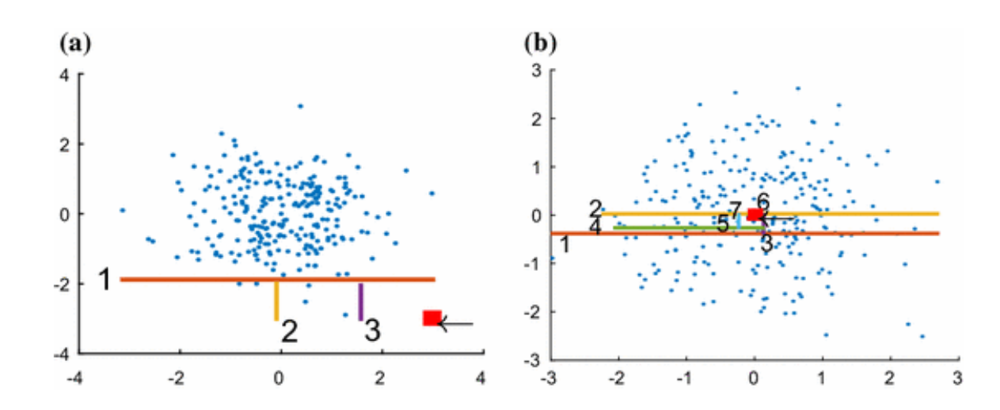

oam.score
The score-and-search approach requires a scoring function, to measure how much the object differs from the rest in a subspace.
Till the moment we have only implemented the Ipath scoring method that consists of making cuts in space, isolating objects from the rest of the dough. In this scenario, if the object is surrounded by several others, you will need to more cuts to separate it from the rest, while if the object is an outlier, it will take less cuts. This behavior can be observed in Figure 1, where (a) represents the procedure of an outlier that was isolated with only three cuts, while (b), a value not considered an outlier, it needed 7 cuts to be isolated from the rest of the data.
To extend with different a algorithm just make sure it has an score method returning an integer as the outling score.
You can find more details about it in the repo README!
oam.score.isolation_path
- class oam.score.isolation_path.IsolationPath(subsample_size: int, number_of_paths: int)
Bases:
oam.score.ScoringBaseClassA class to evaluate a subspace making cuts in random dimensions.
Generating subsamples with subsample_size, you can score how many cuts in the subspace you need to isolate the query. This metric can be calculated number_of_paths times to give you an average path.
- Parameters
subsample_size (int) – the size of subsamples generated in each subspace cut.
number_of_paths (int) – the number of times the algorithm tries to isolate the query to calculate the average path
- score(dataframe: pandas.core.frame.DataFrame, query_point_index: int) float
A function to score a query in a given subspace.
It performs a binary search in the dataframe subspace for the object of the informed query_point_index position. When it manages to isolate the object, it returns a score that represents the number of iterations or cuts that were made till the query was isolated. The lower the value more an outlier the query is.
- Parameters
dataframe (pd.DataFrame) – Dataframe used to build the path tree.
query_point_index (int) – Index of the query which you want to analyse
- Returns
Returns the subspace score.
- Return type
float